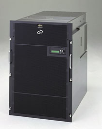
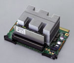
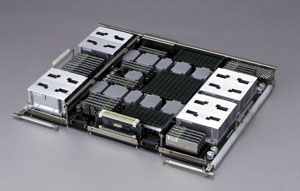
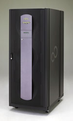

Андрей Борзенко
Корпорация Fujitsu Siemens Computers (http://www.fujitsu-siemens.com) известна своим широким набором продуктов в области ИТ и, по мнению ряда экспертов, является одним из безусловных лидеров европейского ИТ-рынка. В своих продуктах корпорация делает основной упор на высокую отказоустойчивость, готовность и надежность, а также вопросы защиты доступа, не забывая при этом и о производительности.
Так, в процессе создания новых серверов PrimePower накопленные знания и опыт создания мэйнфреймов использовались для обеспечения высокой надежности, доступности и простоты эксплуатации (RAS - Reliability, Availability, Serviceability). На сегодняшний день продано несколько десятков тысяч серверов PrimePower. Компания также применила опыт разработки суперкомпьютеров для создания расширенной архитектуры серверов (в частности, речь идет о высокоскоростных перекрестных коммутаторах).
Отметим, что Fujitsu занимает четвертое место на мировом рынке UNIX-систем и планирует удвоить свою долю на этом рынке на протяжении следующих трех лет. Напомним, что корпорация состоит из компаний Fujitsu в Японии и Юго-Восточной Азии, Fujitsu Technology Solutions - в Соединенных Штатах и Fujitsu Siemens Computers в регионе EMEA (Европа, Ближний Восток и Африка).
|  | Сервер PrimePower 900.
|
В новую серию PrimePower входят модели 900, 1500 и 2500. Все серверы созданы в архитектуре многопроцессорной обработки с общей памятью (Shared Memory Processing, SMP) и поставляются вместе с операционной средой Solaris. На серверах PrimePower устанавливаются процессоры SPARC64 V с частотой 1,3 ГГц собственной разработки Fujitsu Siemens (удовлетворяющие требованиям международной спецификации SPARC International V9 Level 2). Основные параметры новых серверов PrimePower приведены в табл. 1.
Таблица 1. Сравнительный анализ новых моделей семейства PrimePower
| Модель 900 | Модель 1500 | Модель 2500 | |
| Класс сервера | Монтируемый в стойку сервер mid-range | Сервер масштаба предприятия для поддержки критических бизнес-операций | Корпоративный сервер high-end для поддержки критических бизнес-операций |
| Максимальное число системных плат | 2 | 4 | 16 |
| Число процессоров | 4-16 | 4-32 | 8-128 |
| Объем оперативной памяти PC226 DIMM ECC (с коррекцией ошибок), Гбайт | 64 | 128 | 512 |
| Максимальное число слотов PCI | 36 | 72 | 320 |
| Тактовые частоты (МГц) и макс. число соотв. слотов PCI | 33/66 (24, 12) | 33/66 (48, 24) | 33/66 (224, 96) |
| Максимальное число Ethernet-портов | 8 | 32 | 80 |
| Максимальное число последовательных портов | 8 | 32 | 80 |
| Максимальное число USCSI-гнезд | 16 | 32 | 128 |
| Резервный источник питания | 200 В, переменный ток | 200 В, переменный ток | 200 В, переменный ток |
| Резервная система охлаждения | От фронтальной к задней панели | Снизу к задней панели | Снизу к верхней панели |
| Аппаратные разделы с динамической реконфигурацией | 8 | 15 | 15 |
В табл. 2 для трех моделей семейства PrimePower сравниваются функции, обеспечивающие высокую доступность сервера. Если соответствующая функция имеется, то, как правило, указана технология, на которой она основана (в скобках). Дополнительно следует пояснить, что плата PCI (в отличие от карты) считается частью системной платы. Серверы PrimePower 1500 и 2500 оборудованы коммутаторами первого (L1) и второго (L2) уровня. Первый служит для внутрисистемной, а второй - для межсистемной коммутации. RCI-интерфейс необходим для одновременного управления питанием нескольких систем. Обычно он применяется в кластерных системах или в стойках модели 2500.
Таблица 2. Функции, обеспечивающие высокую доступность, в моделях 900, 1500 и 2500 серверов PrimePower
| Компонент системы | Избыточность | Горячее подключение | 900 | 1500 | 2500 |
| Системная плата с ядром Solaris | |||||
| Процессор | Да (DD) | Да (DR) | Да | Да | Да |
| Память | Да (CK) | Да (DR) | Да | Да | Да |
| Шина PCI | Да (IOMP) | Да (DR) | Да | Да | Да |
| Преобразователь постоянного тока | Да | Да (DR) | Нет | Нет | Да |
| Подсистема ввода-вывода PCI | |||||
| Плата PCI | Да (IOMP) | Да (DR) | Да | Да | Да |
| Карта PCI | Да (IOMP) | Да (PHP) | Да | Да | Да |
| Связь коммутатора и объединительной платы | |||||
| Коммутатор второго уровня (L2 Crossbar) | Да | Нет | Нет | Нет | Да |
| Подсистема управления тактовой частотой | Да | Нет | Нет | Нет | Да |
| Преобразователь постоянного тока | Да | Нет | Нет | Да | Да |
| Питание | Да | Да | Да | Да | Да |
| Охлаждение (вентилятор) | Да | Да | Да | Да | Да |
| Управление системой | |||||
| Плата управления | Да | Да | Нет | Да | Да |
| RCI-интерфейс (Remote Cabinet Interface) | Да | Да | Нет | Да | Да |
| LAN-управление | Да | Да | Нет | Да | Да |
| Сеть | Да (IOMP) | Да | Да | Да | Да |
| Подсистема хранения данных (Fibre Channel и SCSI) | Да (IOMP) | Да | Да | Да | Да |
| Примечание: DD - динамическая деградация (автоматическая изоляция и отключение неисправных элементов); DR - динамическое реконфигурирование; IOMP - технология I/O Multipathing; CK - технология, подобная Chipkill; PHP - горячее подключение PCI-плат. | |||||
Ключевые компоненты PrimePower
Операционная система и процессор - вот, пожалуй, ключевые компоненты любого критически важного сервера, и новые модели семейства PrimePower в этом смысле не исключение. Понимая необходимость предоставлять лучшие отраслевые решения, компания оборудовала серверы PrimePower операционной системой Solaris и SPARC-совместимым процессором.
Операционная среда Solaris
Не секрет, что Solaris продолжает лидировать на рынке ОС для корпоративных приложений. Поэтому не случайно на всех серверах серии PrimePower устанавливается ОС Solaris компании Sun Microsystems (http://www.sun.com). При создании данных систем Fujitsu Siemens ориентировалась на стратегию продвижения Solaris в качестве общепринятого стандарта, которая обеспечит высокоуровневую поддержку независимых производителей аппаратного и программного обеспечения, а также позволит разрабатывать собственные серверные компоненты c высокой производительностью и доступностью.
Отметим, что ОС Solaris принадлежит наибольшая доля на рынке UNIX-систем. С точки зрения ИТ-инфраструктуры важно, что практически все приложения для UNIX, представляющие интерес для ИТ-индустрии, сегодня перенесены на Solaris (есть данные, что число подобных приложений превышает уже 15 тыс.). Solaris совместима с открытой архитектурой SPARC V9 Level 2 и полностью поддерживает 64-разрядные вычисления, в том числе 64-разрядное виртуальное адресное пространство и 64-разрядные файловые системы. Кроме того, эта ОС поддерживает и 32-разрядные приложения: для работы в Solaris подавляющее их большинство не нуждается в перекомпиляции. Благодаря масштабируемости и "родству" Solaris с архитектурой SPARC эта ОС способна работать не только на новых, но и на более ранних моделях серверов PrimePower, а также на множестве серверов - от рабочих станций до больших SMP-машин и кластеров других фирм, выпускающих серверы на базе Solaris.
Кроме Solaris и сопутствующего комплекта ПО вместе с серверами поставляются совместимые с этой ОС расширенные средства поддержки (Enhanced Support Facility, ESF). В ESF входят средства администрирования системы, автоматического управления питанием и различные драйверы устройств PrimePower, в частности, модуль управления системой (System Control Facility, SCF).
По оценкам экспертов, Solaris отвечает всем требованиям современных приложений, а дополнительное ПО PrimePower, не препятствующее работе Solaris, обеспечивает дополнительные преимущества.
Новый процессор SPARC
В новый разработанный компанией Fujitsu процессор SPARC встроены характерные для мэйнфреймов RAS-функции, обеспечивающие высокую доступность, а также уникальные внутренняя кэш-память и шины для повышения производительности. Краткий обзор свойств процессора SPARC64 V см. во врезке "Характеристики SPARC64 V".
Помимо перечисленных функций и RAS-расширения, механизм аппаратного уведомления о местах возникновения ошибок управляется ранее упомянутым модулем SCF. Хронологию возникновения и сведения об устранимых и неустранимых ошибках модуль SCF накапливает для дальнейшего анализа. Эту информацию SCF получает с процессоров SPARC64 V через стандартные выделенные контакты JTAG-интерфейса. Напомним, что Joint Technical Advisory Group (JTAG) - это спецификация, которая позволяет обнаруживать ошибки микросхемы, выполнять мониторинг и собирать информацию о неполадках. Информация предоставляется через дополнительные, выделенные контакты микросхемы.
|  | Процессорный модуль.
|
Характеристики SPARC64 VSPARC64 V, самый последний в длинном ряду разработанных Fujitsu Siemens процессоров, поддерживающих спецификацию SPARC, обеспечивает новую мощь и характерные для мэйнфреймов функции высокой доступности в SPARC-среде. Кристалл содержит 191 млн транзисторов и создан по 0,13-мкм медной технологии. Он потребляет всего 50 Вт мощности при тактовой частоте 1,3 ГГц. Известно, что при такой высокой частоте резко возрастает тепловыделение (почти вдвое по сравнению с более медленными процессорами), поэтому малое энергопотребление процессора гарантирует повышенную надежность серверов PrimePower. Для повышения быстроты вычислений SPARC64 V оборудован расположенной на микросхеме неблокирующейся кэш-памятью команд первого уровня (128 Кбайт) и кэш-памятью данных второго уровня (2 Мбайт). Эта сверхоперативная память гарантирует производительность серверов PrimePower, обеспечивая максимальную скорость предоставления процессору нужных данных и команд. Для повышения быстродействия в процессоре SPARC64 V используется современный механизм предсказаний переходов, прогнозирование выборки и параллельное, неупорядоченное исполнение команд на шести арифметических модулях (два модуля генерации адресов, два модуля операций с плавающей точкой и два - для целочисленных операций). Одновременно может исполняться до шести стандартных операций или до четырех операций с плавающей точкой. Ожидается, что в этом году тактовая частота процессора увеличится до 1,8 ГГц, а в следующем - до 2,5 ГГц. Это станет возможным благодаря соблюдению более жестких проектных норм - 0,1 мкм. Полностью новое в SPARC64 V - набор характерных для мэйнфреймов средств обеспечения высокой доступности, благодаря которым к моменту появления нового кристалла в UNIX-отрасли не существовало процессора, сопоставимого со SPARC64 V по способности устранения ошибок и повышения доступности серверных систем в ИТ-инфраструктуре предприятия. В частности, в процессоре SPARC64 V поддерживается исправление ошибок в арифметических модулях и регистрах архитектуры. Это гарантирует целостность информации в тракте данных. Кроме того, применяется технология ECC для исправления ошибок отдельных разрядов или обнаружения ошибок в двух разрядах во встроенной кэш-памяти 2-го уровня как для данных, так и для тегов. ECC также применяется к данным в кэш-памяти 1-го уровня, а теги 1-го уровня дублируются в кэш-памяти 2-го уровня. При копировании из кэш-памяти 1-го уровня в кэш 2-го уровня ошибки разрядов в памяти тегов автоматически корректируются. И, наконец, механизм ECC применяется на внутренних процессорных высокоскоростных шинах с малым временем задержки (например, 40 Гбайт/с в расчете на выборку). Для целей автоматической коррекции ошибок процессор SPARC64 V поддерживает автоматическое аппаратное повторное выполнение команды при случайных ошибках. Кроме того, при возникновении постоянной ошибки и при наличии механизма ECC или основанной на дублировании коррекции ошибок кэш-памяти выполняется деградация. Когда число корректируемых ошибок в процессоре превышает пороговое значение, ОС Solaris интерпретирует это состояние как невосстановимую ошибку и может логически отключить такой процессор.
|
Системная архитектура PrimePower
Как уже отмечалось, аппаратная архитектура PrimePower основана на богатом опыте разработки архитектур мэйнфреймов и суперкомпьютеров. Многие из этих аппаратных разработок, вообще говоря, уникальны: таково, в частности, соединение, известное как матричный коммутатор (crossbar), который применяется для связи системных плат серверов PrimePower моделей 1500 и 2500 (в модели 900 новой серии используется прямое подключение, поэтому перекрестный коммутатор не нужен). Матричный коммутатор обеспечивает прямое соединение типа точка-точка между объединительными платами, которые, в свою очередь, подключены к системным платам PrimePower.
|  | Системная плата PrimePower 2500.
|
В полностью укомплектованной модели 2500 перекрестный коммутатор служит для подключения двух объединительных плат с 16 системными платами, каждая из которых оборудована восемью процессорами SPARC64 V и 64 Гбайт ECC-памяти. Матричный коммутатор Fujitsu работает на довольно высокой тактовой частоте 520 МГц (в моделях 900 и 1500 частота равна 270 МГц) и обеспечивает совокупную пропускную способность в 133 Гбайт/с (за счет двух коммутаторов с пропускной способностью 66,5 Гбайт/с каждый, которые могут при деградации отключаться). Следует отметить, что скорость передачи данных составляет 8,3 Гбайт/с в направлении к каждой системной плате или от нее. Высокая частота работы коммутаторов достигается благодаря использовавшейся ранее в суперкомпьютерах технологии волнового конвейера (wave pipeline). Последняя служит для повышения тактовой частоты коммутатора при низком уровне расфазировки данных с применением нового метода синхронизации тактовой частоты и передачи данных.
Матричные коммутаторы повышают производительность и доступность системы. С их помощью удается минимизировать расстояние между системными платами и сократить временные задержки и число компонентов, а также обходиться без кабелей. В случае сбоя коммутатора (фактически двух коммутаторов с пропускной способностью 66,5 Гбайт/с каждый) его можно деградировать - путем изоляции отказавшего компонента, реконфигурации и перезапуска уцелевших ресурсов (одного коммутатора с пропускной способностью 66,5 Гбайт/с). Эти особенности позволяют не отключать сервер PrimePower полностью.
Серверы PrimePower с высокоскоростными перекрестными коммутаторами прекрасно подходят для инфраструктур, в которых необходимо обеспечить высокую производительность при обработке больших или сильно возрастающих в пиковые моменты нагрузок в OLTP-системах, хранилищах данных или других приложениях, нуждающихся в быстром перемещении огромных объемов данных.
У серверов PrimePower есть и другие интересные особенности архитектуры. В частности, как отмечено в табл. 2, PrimePower поддерживает конфигурацию с двойным генератором тактовых импульсов. При отказе рабочего генератора при перезагрузке сервер перенастраивается на использование резервного генератора PrimePower.
PrimePower поддерживает одну из лучших технологий динамической реконфигурации ресурсов, а также технологию I/O Multipathing (разветвление каналов ввода-вывода) и горячую замену PCI-плат. И, наконец, возможно деление системы на разделы на аппаратном уровне (eXtended PARtition, XPAR) для изоляции неполадок и обеспечения безопасности, причем с детальностью разбиения системы, характерной для программного деления на разделы. Благодаря технологии деления на разделы XPAR стало возможным выделять партицию вплоть до одного процессора и 1 Гбайт памяти разделов. Вообще говоря, XPAR позволяет создавать разделы с одним процессором только на моделях PrimePower 900 и 1500; у модели PrimePower 2500 минимальная конфигурация раздела содержит два процессора.
Таким образом, технология XPAR поддерживает динамическое изменение и перераспределение ресурсов в реальном времени в соответствии с изменениями нагрузки. В результате значительно снижается совокупная стоимость владения - благодаря тому, что различная по структуре нагрузка обслуживается одним сервером.
Наконец, новая серия серверов PrimePower обладает архитектурной гибкостью за счет отделения PCI-слотов ввода-вывода от системных плат. Ранее для повышения быстродействия ввода-вывода на серверах приходилось добавлять системные платы. Теперь этого делать не нужно, поскольку расширение PCI физически отделено от блока ввода-вывода (PCI/диск) PrimePower. Каждая системная плата модели 2500 подключена к двум таким блокам PCI/диск.
Объединение серверов в кластеры
В первую очередь серверы PrimePower предназначены для достижения высокого уровня доступности и масштабируемости. Оптимальную инфраструктуру обеспечивает объединение узлов PrimePower в кластеры четвертого поколения PrimeCluster с применением современных программных модулей кластеризации.
Как известно, PrimeCluster - модульное ПО. Наборы модулей можно собирать и согласовывать так, чтобы они отвечали потребностям узла кластера, памяти и сетевой инфраструктуры в высокой доступности, масштабируемости, поддержке операций параллельных баз данных и управляемости. PrimeCluster создавались на базе технологий Fujitsu для кластеризации UNIX-систем. При разработке технологии PrimeCluster были использованы опыт создания кластеров на базе мэйнфреймов (SynfinityCLUSTER) и система кластеризации, созданная Fujitsu Siemens Computers (Reliant UNIX), в основу которой положена технология, приобретенная у компании Pyramid Technologies.
Программная архитектура PrimeCluster имеет явно выраженный модульный характер. Так, модуль WebView обеспечивает административный вид PrimeCluster, основанный на графическом интерфейсе пользователя Java и применяемый в качестве единой консоли управления. Модульная структура, созданная на основе модуля Cluster Foundation (CF), позволяет без проблем добавлять в кластер новые модули по мере возникновения новых потребностей. На базе модулей предлагается четыре продукта PrimeCluster - Scalability Server, Parallel Server, HA Server и Enterprise Edition.
Scalability Server
PrimeCluster Scalability Server обслуживает клиентские запросы (через Интернет или по прямым подключениям). Обычно он применяется в качестве интерфейсного Web-сервера, прокси-сервера или сервера приложений в многоуровневой архитектуре. Он оборудуется одним шлюзовым узлом и одним или несколькими резервными шлюзовыми узлами; другие узлы кластера (сервисные узлы) обслуживают запросы пользователей. В конфигурации Scalability Server служба PrimeCluster обеспечивает динамическую балансировку нагрузки основанных на TCP/IP приложений, поддерживающих работу со многими экземплярами. Функция балансировки нагрузки позволяет масштабировать такие приложения, особенно если они сильно нагружают процессор. Для обеспечения высокой доступности при таком масштабировании, особенно при сбоях узлов, нагрузка перераспределяется между узлами. ИТ-специалисты, ответственные за поддержку информационной инфраструктуры предприятия, применяют Scalability Server для обработки непредсказуемой или резко изменяющейся во времени нагрузки.
Parallel Server
PrimeCluster Parallel Server обеспечивает кластерную среду для баз данных со средствами параллельной обработки, таких, как Oracle9i RAC. Он подходит для размещения на уровне баз данных в многоуровневой архитектуре. Для оптимального использования уникальной схемы небольших сообщений и кэширования блокировки Cache Fusion в Oracle в кластерах PrimeCluster применяется частный протокол передачи сообщений с коротким временем задержки. При использовании Parallel Server база данных остается доступной даже при отказе отдельных узлов. Более того, обеспечивается синхронизация параллельных выборок из базы данных и поддержка оптимальной архитектуры, состоящей из единой базы данных и ее экземпляров на каждом узле кластера.
HA Server
HA Server обычно применяется в качестве сервера приложений в многоуровневой архитектуре. Высокая доступность приложений достигается за счет мониторинга ресурсов (с применением "детекторов" в узлах, сети и приложениях PrimeCluster), обнаружения неполадок, локального восстановления, где это возможно, и сервисов перемещения при сбое. При наличии HA Server администраторы могут выбирать наиболее подходящую конфигурацию архитектуры кластера. HA Server поддерживает стандартные функции многократного резервирования узлов, перемещение при сбое множественных узлов, локальное восстановление, а также каскадное, выборочное, ручное или автоматическое перемещение при сбое.
Enterprise Edition
Enterprise Edition PrimeCluster поддерживает все необходимые кластерные операции в ИТ-инфраструктуре, жизненно важные для бизнеса. Можно, к примеру, собрать кластер PrimeCluster с двумя узлами на базе серверов модели PrimePower 2500. Каждый сервер в этом случае обладает всеми возможностями, которые предоставляют 128 процессоров SPARC64 V, 512 Гбайт PC266 оперативной памяти с коррекцией ошибок, 320 PCI-слотов ввода-вывода и 15 аппаратных разделов с динамическим отключением неисправных компонентов (деградацией) и динамической реконфигурацией.
|  | Сервер PrimePower 1500.
|
Управление системой PrimePower
Чтобы обеспечить все перечисленные выше возможности серверов PrimePower, требуется высоконадежная подсистема управления системами сервера. Другими словами, система должна управляться так, чтобы постоянно обеспечивать все ее критически важные характеристики. Такое качество обслуживания жизненно важно. Без этого свойства теряется если не вся, то большая часть привлекательности серверов PrimePower для пользователей ИТ-инфраструктуры и людей, ответственных за обеспечение и поддержку этой инфраструктуры.
Именно поэтому вместе с серверами предоставляется системное ПО PrimePower и специализированные аппаратные средства для управления тремя ключевыми компонентами: вычислительными ресурсами, высокой доступностью и безопасностью. Все эти функции управления интегрированы в консоли WebSysAdmin с графическим интерфейсом.
Управление ресурсами
Возможность делить единую физическую систему на множество виртуальных давно реализована в мэйнфреймах. Сегодня такое аппаратное разбиение на разделы доступно и для SMP-компьютеров под управлением UNIX. Аппаратное деление на разделы на серверах PrimePower гарантирует качество сервиса и производительность виртуальных систем. Кроме того, поддерживается изоляция сбойного устройства до устранения неполадки в нем, причем это выполняется без отключения и прерывания работы раздела. Обеспечивается и раздельное управление безопасностью разделов, поэтому виртуальные системы никак не влияют на защиту друг друга. Считается, что аппаратное деление на разделы более ценно, чем управляемое встроенным ПО программное или логическое разбиение на разделы, - в последнем случае ошибки ПО могут распространяться на другие разделы, совместно использующие определенный ресурс.
Впервые представленная в серии PrimePower технология XPAR позволяет дробить систему на очень мелкие разделы - вплоть до одного процессора и 1 Гбайт памяти в разделе (т. е. "резать" поперек системной платы). Это напоминает дробность разбиения на разделы, обеспечиваемую программными средствами, но с сохранением преимуществ аппаратного деления. Кроме того, в XPAR-разделах используется механизм динамической реконфигурации для добавления или удаления ресурсов из раздела без прерывания его работы. Раздел остается доступным для обслуживания пользователей. Такая гибкость также ранее была характерна только для программного разбиения на разделы.
Если средства XPAR не позволяют решить задачу распределения ресурсов, в PrimePower может применяться ARMTech ShareEnterprise - ПО управления ресурсами процессоров и памяти, выделяемой процессам в XPAR-разделах (но не между XPAR-разделами) (см. врезку "Технология ARMTech"). Управление ресурсами невозможно без знания состояния ресурсов сервера PrimePower. Для наблюдения за состоянием разделов или ресурсов сервера администраторы PrimePower применяют инструментальные средства с графическим интерфейсом, которые позволяют проводить мониторинг рабочих нагрузок и производительности, выполнять динамическую реконфигурацию для изменения структуры распределения ресурсов в соответствии с изменившимися потребностями в них и т. п.
Технология ARMTechСерверы PrimePower оборудованы технологией активного управления ресурсами (Active Resource Management Technology, ARMTech). Более того, для оптимальности управления ресурсами предлагается ARMTech ShareEnterprise - наиболее полный из всех продуктов серии ARMTech. ARMTech ShareEnterprise на базе Solaris позволяет добиваться высокой производительности автономных серверов PrimePower и серверов в составе кластера. Обеспечивается также высокое качество сервиса и снижение совокупной стоимости владения. ARMTech дает администраторам возможность предоставлять ресурсы сервера PrimePower для совместного доступа пользователей, групп и приложений. ПО ARMTech тесно связано с ядром Solaris, что обеспечивает жесткий контроль за использованием ресурсов отдельными процессами и за тем, чтобы они не затрагивали других пользователей или процессы. Таким образом, удается гарантировать определенные уровни обслуживания инфраструктур. ARMTech также выполняет мониторинг и уведомляет об использовании ресурсов. Это особенно важно в среде с консолидацией серверов. ARMTech разделяет доступные процессорные ресурсы процессора и общие ресурсы на основании определенных администратором политик с иерархическим распределением ресурсов между пользователями, группами и приложениями. В частности, для устранения конфликтов ресурсов ARMTech квотирует выделяемую пользователям виртуальную память или ограничивает число процессов, которые пользователю разрешено запускать. При необходимости ARMTech выделяет важным базам данных больше ресурсов. С другой стороны, базам данных может выделяться фиксированная доля ресурсов, чтобы поддерживать постоянное качество обслуживания пользователей независимо от загрузки базы данных. ARMTech решает все перечисленные задачи, либо назначая доли ресурсов, либо бронируя ресурсы. Эту автоматическую политику можно корректировать "на лету", в процессе использования ресурсов, при изменении нагрузки на систему. Доля ресурса дает потребителю право на соответствующую долю ресурсов (долю времени работы ресурса) по отношению к остальным конкурирующим потребителям этого же ресурса. Бронирование же ресурсов - это выделение абсолютной величины процессорных ресурсов; таким способом защищаются права первоочередных потребителей ресурса. |
Управление высокой доступностью
Для гарантирования высокой доступности сервера PrimePower постоянно выполняется само-мониторинг в процессе начальной загрузки и работы системы с тем, чтобы изолировать сбойные подсистемы и компоненты. Тем самым сводится к минимуму влияние обстоятельств на доступность системы. В долгосрочной перспективе предполагается, что в серверах PrimePower подобное обнаружение и изоляция будут выполняться автоматически, без вмешательства человека. В табл. 2 перечислены основные особенности и функции серверов PrimePower, обеспечивающие высокую доступность.
Мониторинг процессоров, подсистемы памяти, ОС и пространства на диске на серверах PrimePower выполняется резервным SCF-модулем. При управлении системой SCF использует отдельный процессор, не зависящий от системных процессоров SPARC64 V.
В процессе начальной загрузки системы SCF отслеживает возможное "зависание" системы по причине неисправности оборудования. При обнаружении дефектного или потенциально сбойного компонента неполадка (или неисправный узел) изолируется, и система перезапускается. Следует иметь в виду, что при обнаружении отказа процессора (даже в процессе начальной загрузки) SCF уведомляет об этом консоль управления системой SMC (System Management Console), которая, в свою очередь, регистрирует событие в журнале и отчитывается перед подсистемой удаленной поддержки клиентов REMCS (Remote Customer Support System).
Все эти операции, в том числе разрешение или запрещение дальнейшего использования сбойного устройства, а также порядок его замены, определяются в соответствующих политиках ИТ-среды. Такая динамическая деградация системы находится под полным контролем администратора. Даже после успешной загрузки сервера PrimePower модуль SCF продолжает мониторинг на предмет обнаружения нежелательных операций. И на этом этапе сбойное устройство может изолироваться для предотвращения сбоя всей системы.
Наконец, в серверах PrimePower сведено к минимуму время простоя системы при замене неисправных системных плат. Такая особенность, как FMA (Flexible Memory Architecture), поддерживает горячую замену, даже если на системной плате загружено ядро Solaris. Это существенный шаг вперед по сравнению с предыдущими моделями серверов PrimePower, в которых не поддерживалась горячая замена системной платы с загруженным ядром операционной системы.
Управление безопасностью
Как говорилось ранее, технология XPAR обеспечивает в серверах PrimePower преимущества аппаратного деления системы на разделы с детализацией разбиения, характерной для программного разбиения. Аппаратные границы между XPAR-разделами предотвращают нарушение защиты одних разделов пользователями и приложениями других разделов. Но безопасная система среды предприятия нуждается в дополнительных элементах обеспечения безопасности. Новые серверы предоставляют средства управления безопасностью - как встроенные в сам сервер PrimePower, так и предоставляемые сторонними поставщиками. К ним относятся:
- средства безопасности консоли SMC в моделях PrimePower 900/1500/2500;
- средства защиты среды Solaris Operating Environment, которые включают интегрированный брандмауэр и протокол IPSec для обеспечения целостности и безопасности данных;
- ПО сторонних поставщиков, в числе которого программы поддержки самых разнообразных масштабируемых брандмауэров, VPN-сети, ПО обнаружения вторжений, пакеты управления защитой предприятия и мониторинга в реальном времени.
В совокупности все эти решения, основанные на политике безопасности ИТ-среды, обеспечивают серверам PrimePower очень высокий уровень защиты и гарантируют работоспособность системы даже в условиях явных атак злоумышленников и программных сбоев.
В заключение отметим, что перечисленные возможности серверов PrimePower обеспечивают им преимущества для совершенствования ИТ-инфраструктуры в условиях современной переменчивой среды бизнеса.